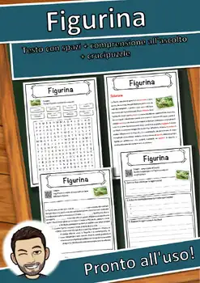
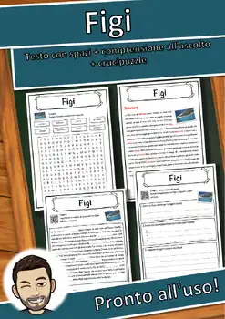
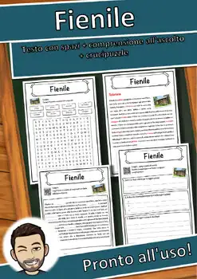
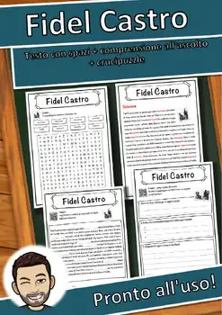
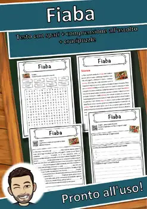
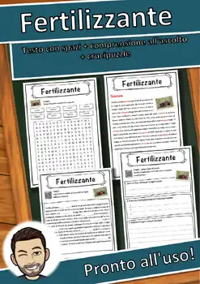
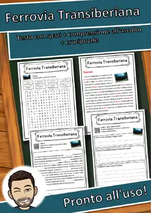

By a teacher, for teachers
Classroom-ready.
In five minutes.
3,300+ no-prep printables with answer keys – reading comprehension passages, escape-style reading trails, and hands-on math centers for grades 1–10.
Visit my TpT storeBrowse all resources
- 3,300+ resources
- 110+ reading trails
- Answer keys included
- No prep – print & go
- Grades 1–10


No prep
Printable PDF – print and go. Every resource comes with an answer key, so it works for sub plans, centers and early finishers.
Built for real classrooms
Clear, simple language, step-by-step tasks and self-checking elements help every student work independently.
Standards in mind
Listings name the matching CCSS reading and language standards, so planning stays quick.
Thanksgiving & Fall
Pumpkins, apples, harvest, and Thanksgiving – reading and math resources for the fall months.
Irish Halloween Reading Comprehension Passages | History Scavenger Hunt 3-4
Apple Tree Reading Comprehension Passages | Science Scavenger Hunt 7-8
Fall Farm Safety Reading Comprehension Passages | Health Scavenger Hunt 1-2
Money Reading Comprehension Passages | Economics Scavenger Hunt 3-4
Autumn Leaves Reading Comprehension | Science Scavenger Hunt 3-4

Land Art Reading Comprehension Passages | Visual Arts Scavenger Hunt 3-4

Grain Field Reading Comprehension Passages | Autumn Scavenger Hunt 3-4

Pumpkin Farm Reading Comprehension Passages | Science Scavenger Hunt 3-4
Christmas & Winter
Gingerbread, snow, winter sports, Christmas, and the New Year – resources for the cold season.

Lunar New Year Reading Comprehension Passages | Winter Scavenger Hunt 5-6

Window Art Workshop Shapes Counting Role Play | Winter Math Center Grade 1

Bird Feeder Counting Math Role Play | Winter Math Center Grade 1

Wildlife Park Winter Feeding Math Role Play | Winter Math Center Grade 1

Holiday Package Station Weight Role Play | Christmas Math Center Grade 4

Geometry Reading Comprehension Passages | Math Scavenger Hunt 7-8

The Travel Agency Map Scale Role Play | Winter Math Center Grade 4

Salt on Ice Reading Comprehension Passages | Science Scavenger Hunt 7-8
New
New resources
My newest resources appear here first. The list updates automatically.

File – Italian Reading: Cloze Text, Listening Task & Word Search (Scheda)

Figurina – Italian Reading: Cloze Text, Listening Task & Word Search (Scheda)

Figi – Italian Reading: Cloze Text, Listening Task & Word Search (Scheda)

Fienile – Italian Reading: Cloze Text, Listening Task & Word Search (Scheda)

Fidel Castro – Italian Reading: Cloze, Listening & Word Search

Fiaba – Italian Reading: Cloze Text, Listening Task & Word Search (Scheda)

Fertilizzante – Italian Reading: Cloze, Listening & Word Search

Ferrovia Transiberiana – Italian Reading: Cloze, Listening & Word Search
FREE
These resources are currently free in my TpT store. The list updates automatically every day.
Reading Trails
Escape-style reading scavenger hunts: students read a station, follow the clue to the next place, collect letters, and crack the secret word. Dead ends let them check their own work.

Bell Making Reading Comprehension Passages | Music Scavenger Hunt 5-6
Lunar New Year Reading Comprehension Passages | Winter Scavenger Hunt 5-6
Geometry Reading Comprehension Passages | Math Scavenger Hunt 7-8
Salt on Ice Reading Comprehension Passages | Science Scavenger Hunt 7-8

Holiday Meal Reading Comprehension Passages | Life Skills Scavenger Hunt 7-8

Place Value Reading Comprehension Passages | Math Scavenger Hunt 1-2

World War I Reading Comprehension Passages | History Scavenger Hunt 8-9

Celtic Village Reading Comprehension Passages | History Scavenger Hunt 5-6
Math Role Plays
Hands-on math centers: the class plays a real-life scene and practices math along the way – with answer keys.
Window Art Workshop Shapes Counting Role Play | Winter Math Center Grade 1
Bird Feeder Counting Math Role Play | Winter Math Center Grade 1
Wildlife Park Winter Feeding Math Role Play | Winter Math Center Grade 1
Holiday Package Station Weight Role Play | Christmas Math Center Grade 4
The Travel Agency Map Scale Role Play | Winter Math Center Grade 4

The Snowman Workshop Measurement Role Play | Winter Math Center Grade 2

Cookie Bakery Addition Subtraction Role Play | Winter Math Center Grade 1

The Christmas Bakery Weight Role Play | Christmas Math Center Grade 3
Bundles
Several resources on one topic in one download – at a lower price than buying them one by one.

Musical Instruments Reading Comprehension BUNDLE | Orchestra & Piano

Space Exploration Reading Comprehension BUNDLE | Apollo 11 & Rockets

Arctic Animals Reading Comprehension BUNDLE | Polar Bears & Huskies

Winter Reading Comprehension BUNDLE | Snow, Winter Sports & New Year

Spring Holidays Reading Comprehension BUNDLE | Easter, Passover & Eid

Earth Science Reading Comprehension BUNDLE | Rocks, Minerals & Climate

Prehistory Reading Comprehension BUNDLE | Stone Age to Bronze Age

Art History Reading Comprehension BUNDLE | Renaissance, Impressionism
Reading Comprehension Worksheets
Informational text as a cloze passage with word bank, a QR-code listening task with free audio, and a word search – 5 pages with answer keys.
File – Italian Reading: Cloze Text, Listening Task & Word Search (Scheda)
Figurina – Italian Reading: Cloze Text, Listening Task & Word Search (Scheda)
Figi – Italian Reading: Cloze Text, Listening Task & Word Search (Scheda)
Fienile – Italian Reading: Cloze Text, Listening Task & Word Search (Scheda)
Fidel Castro – Italian Reading: Cloze, Listening & Word Search
Fiaba – Italian Reading: Cloze Text, Listening Task & Word Search (Scheda)
Fertilizzante – Italian Reading: Cloze, Listening & Word Search
Ferrovia Transiberiana – Italian Reading: Cloze, Listening & Word Search
By subject
All resources on one topic area – filterable by grade.
By grade
Pick a grade level to see matching resources.
Other languages
This page only shows resources in English. Here you'll find my materials in Spanish, French, Italian and German.
Deutsch
More than 6,500 German teaching materials with answer keys – available on eduki.
Go to the Deutsch page →Español
Spanish reading passages, cloze worksheets and reading trails – available on TpT. · 1,877 resources
Go to the Español page →Français
French cloze worksheets with listening task and word search – available on eduki. · 3,061 resources
Go to the Français page →Italiano
Italian cloze worksheets with listening task and word search – available on eduki. · 2,092 resources
Go to the Italiano page →Frequently asked questions
Where can I buy the resources?
All resources on this page are sold in my Teachers Pay Teachers store “Snice”. Every resource page has a button that takes you straight to the product on TpT.
Which grades are they for?
Most resources are written for grades 1–10. The exact grade range is shown on each resource page and in the TpT listing.
Are answer keys included?
Yes. The reading passages, reading trails and math centers come with answer keys, so they also work as sub plans or independent work.
What format are the files?
Printable PDF files – no prep needed: print and go.
Do you have resources in other languages?
Yes: Spanish resources are on the Spanish page, and French and Italian worksheets, as well as German materials, can be found under “Other languages”.
By a teacher, for teachers
I'm a teacher from Germany and I create classroom resources for my own students first. Every resource is checked before it goes live – so you spend less time preparing and more time teaching.